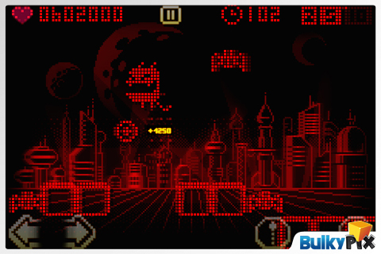
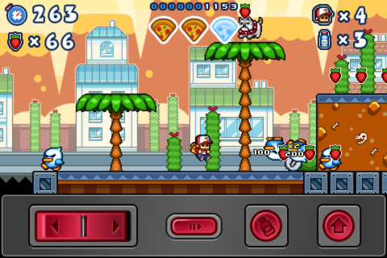
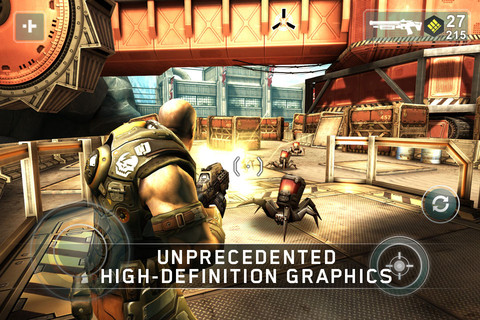
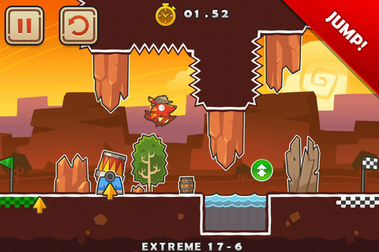

Comment contrôler un jeu de plateforme sur mobile ou tablette ?
, Alexis Couronne - [ Jeu vidéo ]Lorsque l'on est confronté au développement d'un jeu sur mobile ou tablette, il y a des contraintes que l'on ne retrouve que sur ce genre de support. En effet, le contrôle d'un personnage de jeu de plateforme tel que Mario n'est pas très aisé et souvent soumis à de vives critiques. L'absence de gamepad à contraint les développeurs à trouver des ruses pour rendre cela possible.
Après une petite recherche j'ai pu trouver ici ou là quelques solutions pour résoudre ce problème.
Les touches semi-transparentes
La plupart des jeux de plateforme sur mobile dispose d'un système de joystick virtuel posé par dessus la scène du jeu lui-même. L'un des jeux les plus populaires est Pix'n Love Rush.

Je trouve à ce système plusieurs contraintes :
- la première est que l'on cache avec ses doigts la zone de l'écran où se situent les touches virtuelles et donc potentiellement le personnage du joueur. Pour remédier à cela on peut mettre en place un système de caméra qui permet d'avoir le personnage en permanence au centre de l'écran.
- la seconde est que chaque joueur a une façon naturelle bien à lui de tenir son mobile en main. Un bouton bien situé pour un joueur ne le sera pas forcément pour un autre.
Les touches hors zone de jeu
En seconde position, on trouve très souvent des contrôles en dehors de la scène de jeu. Une zone (souvent dans la partie basse de l'écran) est dédié au contrôle du personnage.
En voici pour exemple PizzaBoy.

Avec cette technique on élimine le premier problème que l'on pouvait rencontrer dans la solution précédente. Le second quant-à lui persiste toujours.
Un nouveau problème apparait aussi à mes yeux : la zone de jeu est nettement réduite !
Les touches semi-transparentes positionnées dynamiquement
L'une des méthodes les plus élégantes que j'ai croisé est une évolution des touches semi-transparentes. En effet, il suffit de toucher l'écran avec votre doigt et le bouton se dessine sous celui-ci. Vous n'avez alors plus qu'à l'utiliser.
J'ai recemment découvert un jeu qui utilise cette solution : ShadowGun, développé avec la technologie Unity3D.

Cette solution résoud à elle seule l'ensemble de ces problèmes. Si votre doigt recouvre une zone importante de la scène, il vous suffit de le déplacer et de "créer" un joystick ailleurs sur l'écran. Quelle que soit la façon dont le joueur tient son mobile, celui-ci sera à l'aise car il pourra le tenir le plus naturellement possible. Enfin, la taille de la scène n'est pas réduite.
L'accéléromètre
Cette technique permet de manipuler votre personnage en penchant soit d'un coté soit de l'autre votre mobile. Doodle Jump a largement utilisé cette solution.

Le gros problème de ce genre de contrôle est la précision. Pour un jeu comme Doodle Jump ce système s'adapte très bien, imaginez maitnenant contrôler Mario : ça devient plus compliqué!
Avance automatique
Le concept est très simple : votre personnage avance en permanence dans une direction. Vous n'avez juste qu'à toucher l'écran pour qu'il réalise une action. Un jeu très connu qui utilise cette méthode est Run Roo Run.

Ce moyen original me fait un peu penser à un vieux jeu : Lemmings, dont le but était de faire évoluer le maximum de Lemmings vers la sortie du niveau en utilisant divers accessoires.
Une méthode qui peut tout de même rebuter certains joueurs adeptes du contrôle total du personnage.
Un contrôle en fonction du gameplay
Après ce bref aperçu, on constate qu'aucune solution n'est aujourd'hui sans défaut. Le contrôle du jeu doit être choisi en fonction du gameplay que l'on souhaite mettre en place. Il ne doit pas être négligé. Un jeu avec les meilleurs graphismes au monde ou un univers splendide risque d'être mis de coté si le contrôle n'est pas correctement adapté.
J'ai peut être oublié certains systèmes. Faites en part dans les commentaires !